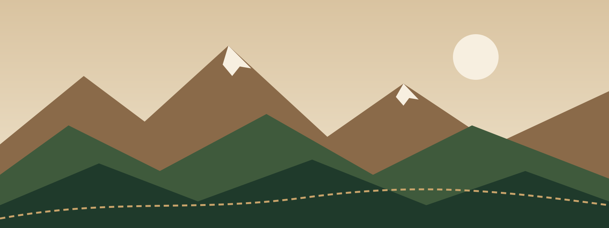

ALPIN-TRAIL
ALPIN-TRAILLieu et accès
Départ et arrivée : place de l'Église, Saint-Michel-des-Cimes (05).
- En voiture : parking gratuit à 300 m, navette dès 6 h.
- En train : gare la plus proche à 25 km, covoiturage organisé sur le site.
- Hébergement : gîtes, camping municipal et hôtels du village à moins de 10 minutes à pied.

Matériel
Obligatoire
- Réserve d'eau d'1 litre minimum
- Gobelet personnel (zéro déchet)
- Veste coupe-vent imperméable
- Couverture de survie et sifflet
- Téléphone chargé
- Dossard visible à l'avant
Recommandé
- Chaussures de trail à crampons
- Bâtons (autorisés)
- Casquette, lunettes, crème solaire
- Bandes de maintien et pansements
- Barres énergétiques
Accessibilité
Le village départ, les toilettes, le buffet et la remise des prix sont accessibles aux personnes à mobilité réduite. Le parcours est en pleine nature, donc non accessible en fauteuil. Une randonnée-accompagnement de 5 km est proposée en parallèle, à demander lors de l'inscription.
Conditions
Certificat médical de moins d'un an obligatoire (ou licence FFA/FFTri en cours de validité). En cas de météo dangereuse, la course peut être modifiée ou annulée, avec report d'inscription.
Contact : contact@alpin-trail.com – 05 62 52 32 02